Make a little fleet
Drag to steer close to stranded boats. Each rescue joins your visible tow chain; a bigger convoy promises a better delivery.
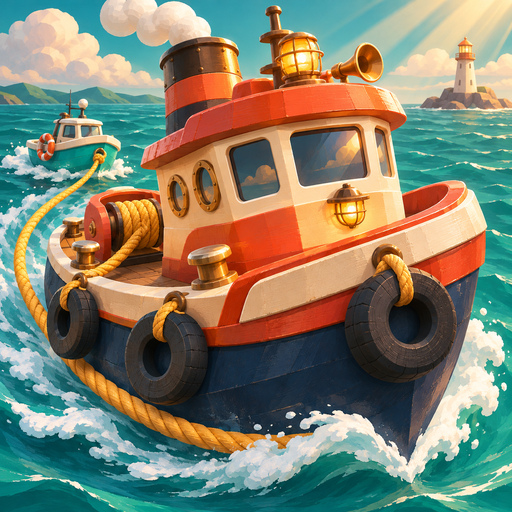
TIDELINE TOWPrototype review · 12 November 2026
A one-thumb rescue arcade where the reward is visible: one stranded boat becomes a winding fleet, then a satisfying delivery home.
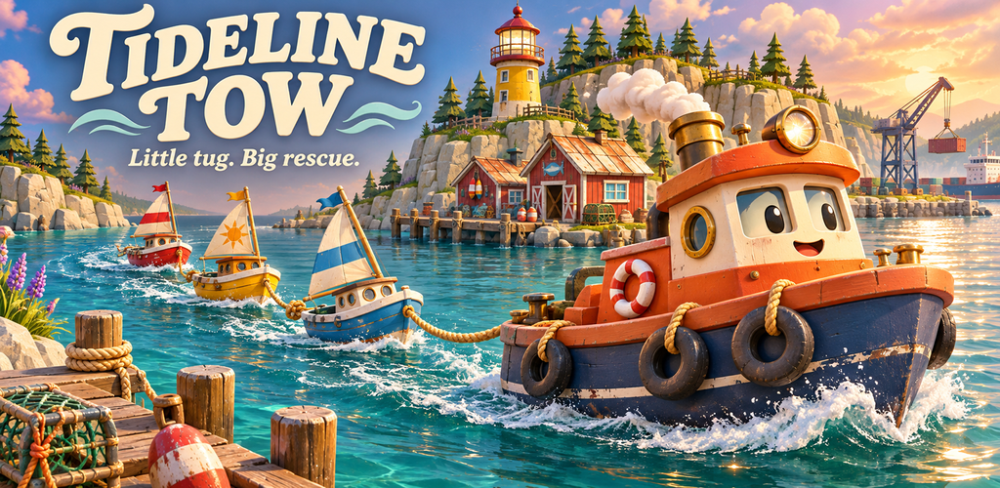
Generated promotional artwork. Gameplay captures appear below.
The satisfying bit
Drag to steer close to stranded boats. Each rescue joins your visible tow chain; a bigger convoy promises a better delivery.
Read rocks, currents and ferry crossings. Protect three hull hearts and choose when to bank your load.
Bring the chain into the safe harbor, collect your reward and cast off again. Stars, skipper XP and tug upgrades give each return a purpose.
A coast worth learning
Sunwake Cove teaches the tow. Copperdock adds a working waterfront. Lantern Strait turns the harbor indigo and amber. Thirty authored contracts sit alongside Endless Watch and a seeded daily rescue.
Daily goals, a seven-day welcome gift, twenty illustrated achievements and three local record categories support short return visits.
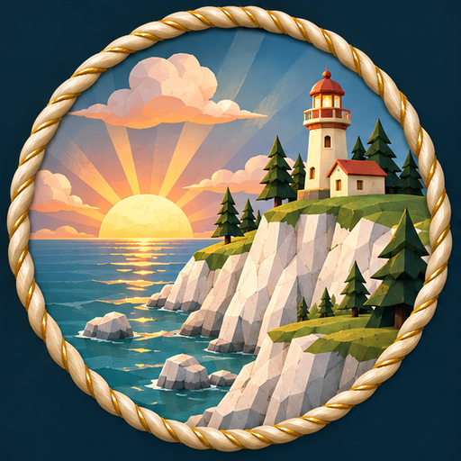
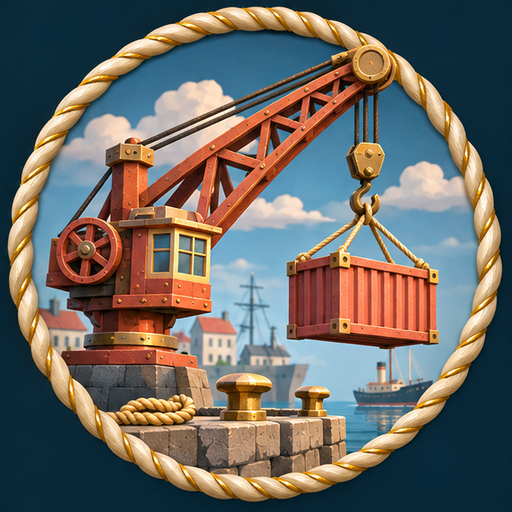
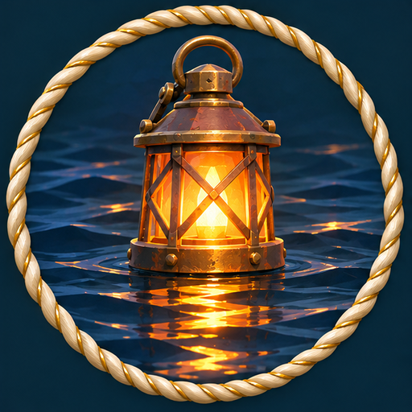
Online Play Games IDs are intentionally blank. Local achievements and records remain available.
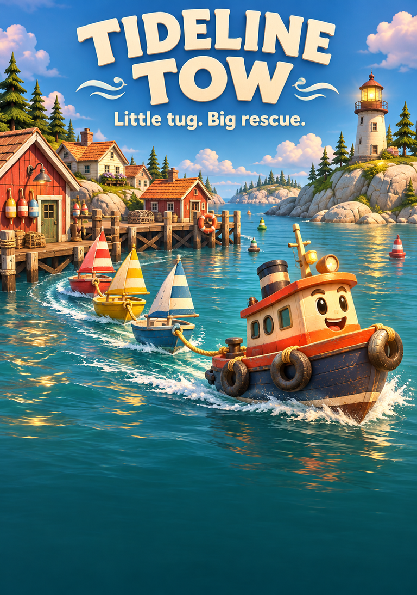
From the implemented game
Raw Godot runtime captures, preserved without illustrative overlays. Profile names describe capture dimensions, not physical-device testing. Android emulator evidence is listed separately in the capture provenance.
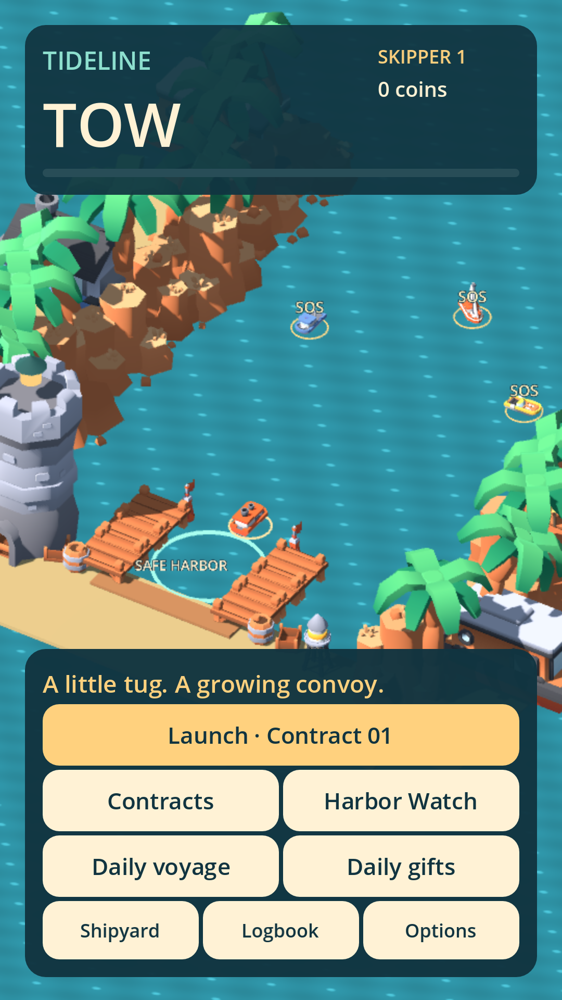
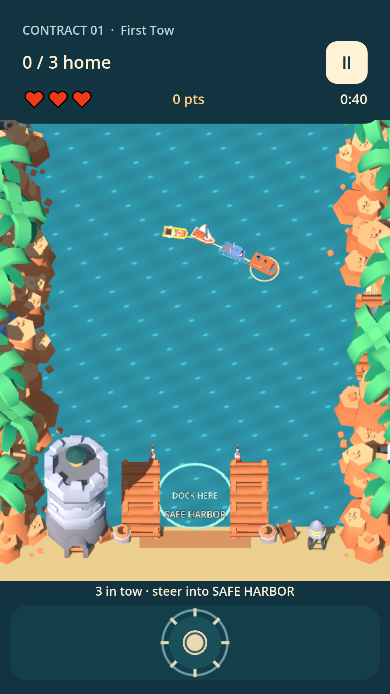
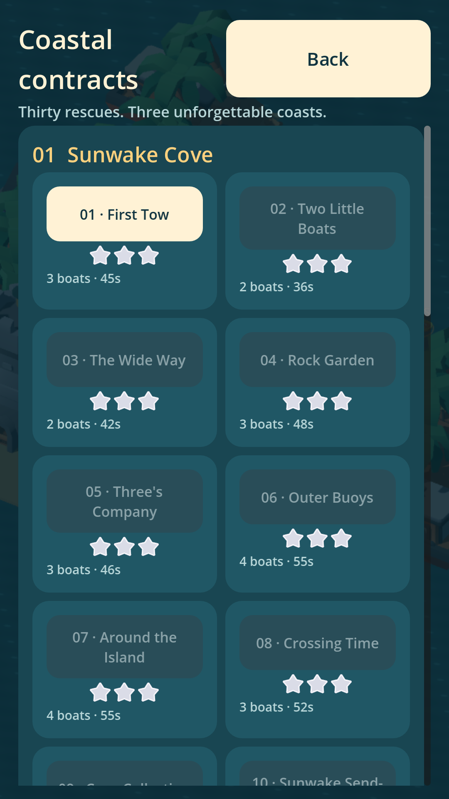
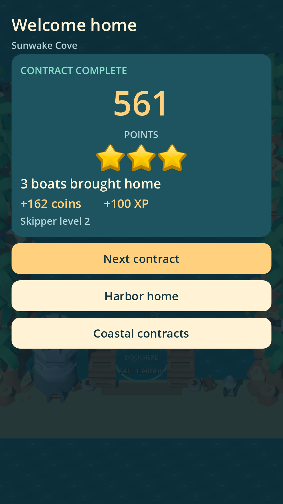
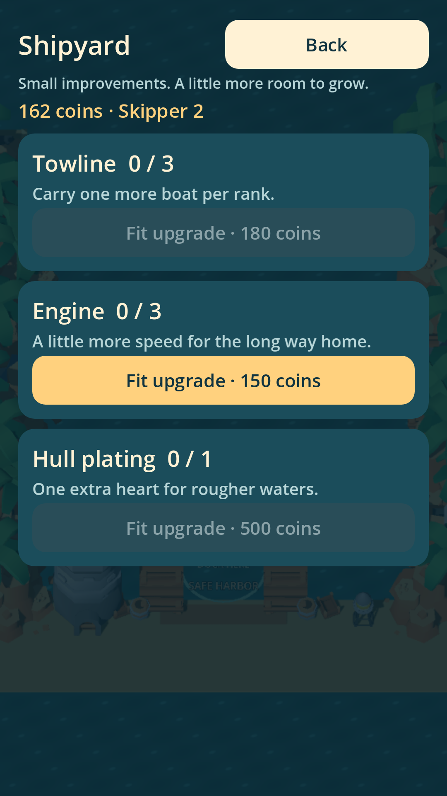
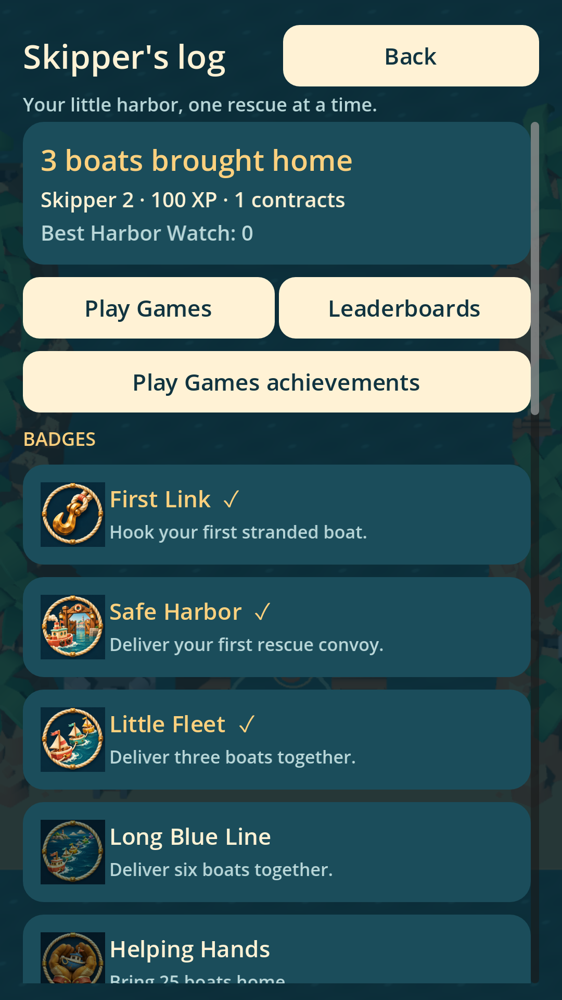
Monetization
A reserved banner sits on home and results. An available interstitial can appear after every third completed round. On failure, the player may choose a rewarded continue; it is granted only after an earned-reward callback.
First-pass Android builds use Google's sample test IDs. Advertising, consent and Play Games require final account configuration and production validation. Web play does not simulate rewarded-ad earnings.
Review with evidence
Use the linked acceptance report for observed passes, failures and pending checks. This page describes the prototype; it does not certify physical-device, production-service or store-release readiness.